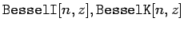

Mathematica kennt auch eine Anzahl spezieller Funktionen. Die folgende Tabelle listet einige auf:
| BESSEL-Funktionen Jn(z) und Yn(z) | |
| Modifizierte BESSEL-Funktionen In(z) Kn(z) |  |
| LEGENDREsche Polynome Pn(x) | |
| Kugelfunktionen |
Weitere Funktionen können mit entsprechenden Spezialpaketen zugeladen werden. (s. auch Lit. 17.1).